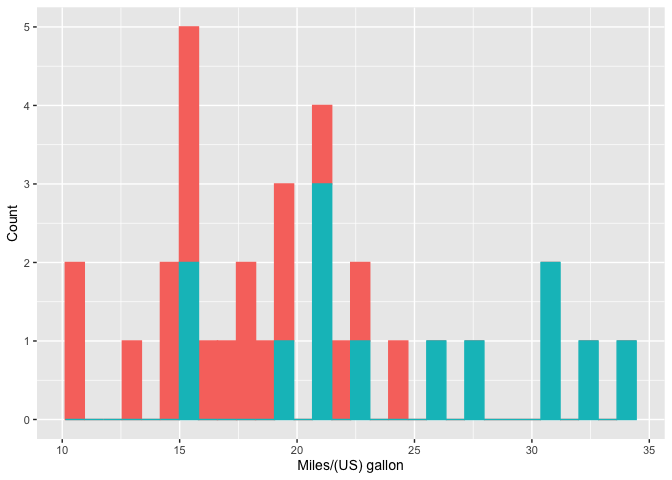

The goal of pRedictwine is to aid in the workflow of a linear regression analysis. It provides functions that could aid in the steps of loading and tidying the data, histograms for exploratory analysis, and creating the linear regression model.
Contains 3 functions that are aimed to help in the workflow of a linear regression analysis. Such functions are one to load an online dataset and change the columns’ names, another to create appropriate histograms, and a last one to directly create the linear regression model. This package was created mainly for the prediction of wine quality through MLR, found in https://github.com/DSCI-310-2024/dsci-310_group-7_wine-quality-prediction.
This package is meant to be used for the programming language R. The version of R used to create this project was 4.3.2. Where pRedictwine sits in the package ecosystem for R is in a bundle along with other packages that aid in loading and wrangling data (readr and tidyverse), creating histograms (ggplot2), and creating a fitted linear regression model (parsnip and recipes). However, our package differs from the aforementioned ones as our functions allow the user to reach their desired end product without having to use multiple functions. Instead, specifying with a single function does the trick (more details on this in Usage).
Installation
You can install the development version of pRedictwine from GitHub with:
# install.packages("pRedictwine")
devtools::install_github("DSCI-310-2024/pRedictwine")Usage
- Loading a dataset from an URL and changing its column names: When you want to load an online dataset from an URL and at the same time change the names of the columns, usually you have to first load the data and then subsequently change the column names. However, with pRedictwine, you can do it all with a single function with load_W_new_col().
library(pRedictwine)
dataset_url <- "https://raw.githubusercontent.com/plotly/datasets/master/mtcars.csv"
new_col_names <- c("model", "milespergallon", "cylinder_number", "displacement", "horsepower", "rear_axle_ratio", "weight", "quartermiletime", "engine", "transmission", "forwardgears", "carb")
comma_delimiter <- ","
loaded_dataset <- load_w_new_col(dataset_url, new_col_names, comma_delimiter)
#> Rows: 32 Columns: 12
#> ── Column specification ────────────────────────────────────────────────────────
#> Delimiter: ","
#> chr (1): manufacturer
#> dbl (11): mpg, cyl, disp, hp, drat, wt, qsec, vs, am, gear, carb
#>
#> ℹ Use `spec()` to retrieve the full column specification for this data.
#> ℹ Specify the column types or set `show_col_types = FALSE` to quiet this message.
head(loaded_dataset)
#> # A tibble: 6 × 12
#> model milespergallon cylinder_number displacement horsepower rear_axle_ratio
#> <chr> <dbl> <dbl> <dbl> <dbl> <dbl>
#> 1 Mazda … 21 6 160 110 3.9
#> 2 Mazda … 21 6 160 110 3.9
#> 3 Datsun… 22.8 4 108 93 3.85
#> 4 Hornet… 21.4 6 258 110 3.08
#> 5 Hornet… 18.7 8 360 175 3.15
#> 6 Valiant 18.1 6 225 105 2.76
#> # ℹ 6 more variables: weight <dbl>, quartermiletime <dbl>, engine <dbl>,
#> # transmission <dbl>, forwardgears <dbl>, carb <dbl>- Create a histogram: If you want to create a histogram with x labels, different coloured values by group, and specifiable x-axis, y-axis, labels; you can do so with create_histogram(). Usually, with ggplot2, multiple layers have to be specified but with create_histogram(), it is possible to do so in a single function.
library(pRedictwine)
mpghistogram <- create_histogram(df = mtcars_mutated, x = mpg, group = am,
x_lab = "Miles/(US) gallon", y_lab = "Count", font_size = 10.5)
mpghistogram
#> `stat_bin()` using `bins = 30`. Pick better value with `binwidth`.
- Create a model: When creating fitted linear models, quite a few functions have to be used and in the correct order. This could be confusing. If you want to create a fitted linear regression model in a single step, you can do so with fit_linear_reg().
library(pRedictwine)
mpg_fit <- fit_linear_reg(mpg ~ ., mtcars)
mpg_fit
#> ══ Workflow [trained] ══════════════════════════════════════════════════════════
#> Preprocessor: Recipe
#> Model: linear_reg()
#>
#> ── Preprocessor ────────────────────────────────────────────────────────────────
#> 0 Recipe Steps
#>
#> ── Model ───────────────────────────────────────────────────────────────────────
#>
#> Call:
#> stats::lm(formula = ..y ~ ., data = data)
#>
#> Coefficients:
#> (Intercept) cyl disp hp drat wt
#> 12.30337 -0.11144 0.01334 -0.02148 0.78711 -3.71530
#> qsec vs am gear carb
#> 0.82104 0.31776 2.52023 0.65541 -0.19942